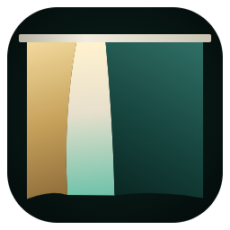
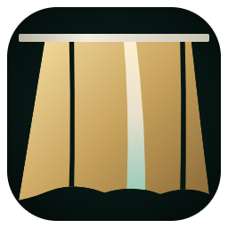
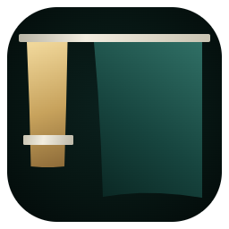

悬杆 + 偏缝HANGING SEAM
手段 1+4｜4 个形状：横杆 / 左帘 / 右帘 / 缝光。杆高 36、两端出头 36； 缝 130→210 宽、缝心在 37%；左帘 220 : 右帘 434。
弱点：缝做得宽才保得住 16px，宽了又容易读成「一束光」而不是被拨开的布。

单色 · 纯白
256 / 64 / 32 / 16 并排；单色版只判剪影；杆不承担 16px 辨识度
手段 1+4｜4 个形状：横杆 / 左帘 / 右帘 / 缝光。杆高 36、两端出头 36； 缝 130→210 宽、缝心在 37%；左帘 220 : 右帘 434。
弱点：缝做得宽才保得住 16px，宽了又容易读成「一束光」而不是被拨开的布。

单色 · 纯白
手段 1+2｜4 个形状：横杆 / 一幅布 / 两道阴褶 + 一道亮褶。布上缘 660 宽、 下缘 856 宽（被杆收住再垂开）；褶 22 / 96 / 26 宽，间距 280 / 220。
弱点：单色版把亮褶也挖成负空间，布被切成几条，容易读成竖百叶。

单色 · 纯白

手段 1+5｜4 个形状：横杆 / 窄帘 182 宽（垂到 744 被束带系住）/ 束带 / 宽帘 484 宽（垂到 884）。
弱点：束带在 16px 消失，窄帘退成一根短条，整枚偏重右半边。

单色 · 纯白


16px 像素放大 ×8
A1
A2
A3
同一组四尺寸，单色版换纯黑
手段 1+4｜杆比布边各出头 36，缝向 1/3 处偏移并向下张开。
弱点：浅底上左帘的暗金与深青都会压成深色，缝只能靠露出的白底成立。
单色 · 纯黑
手段 1+2｜三道褶宽窄与间距都不等；布上窄下宽，下缘两侧比中段长。
弱点：亮褶是「宽」的那条，缩小后它反而最像面板的分界，而不是光的褶皱。
单色 · 纯黑
手段 1+5｜窄帘只到 744，宽帘垂到 884，宽度比 182 : 484，下缘高度差 140。
弱点：下半部左侧是一整块空区，远看重心偏右，不像居中图标。
单色 · 纯黑